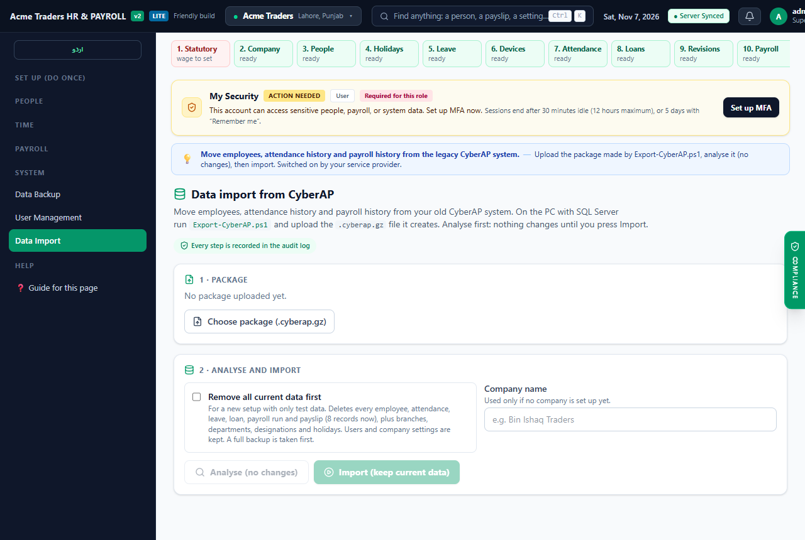
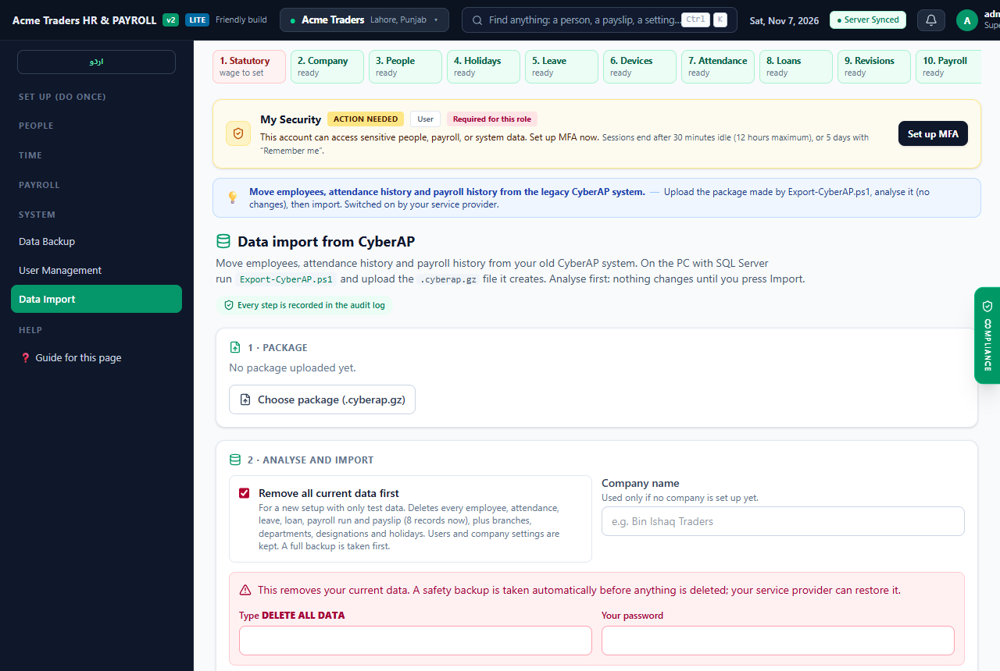

For your IT administrator: move employees, 12+ years of attendance and the payroll history from your old CyberAP (SQL Server) system into your new HR & Payroll Suite yourself, without OneNet having to touch your data.
| CyberAP | New system | Notes |
|---|---|---|
| branch, shift | Branches; shift on each employee | Province is set to Punjab and city is blank: correct them in Company Setup. |
| employee_group | Departments | Sub-group is kept on the employee (legacy details). |
| designation, holiday | Designations, Holidays | Branch off days are archived. |
| employee (all, active and former) | Employees | Code, name, father's name, CNIC, phones, addresses, dates, gender, marital status, branch, department, designation, shift, photo. Former staff become Terminated. |
| salary (basic salary) | Basic salary | Only when it is a real figure; CyberAP's placeholder 1.0 becomes 0. |
| attendance, processed_attendance, employee_over_time, employee_tracking, employee_time_out_reason | Attendance (one record per employee per day) | Status, duty in/out, every break with its reason (Prayer, Lunch, Personal …), overtime, branch, personal-out minutes. CyberAP codes are kept on the record. |
| Payroll 2015–2018, monthly summaries, salary heads, advances, users, settings, screens | Archive table legacy_records | Kept for reference and audits; not shown in payroll screens. |
| Fingerprint templates, original photos | Archive table legacy_records | Fingerprints are DigitalPersona One Touch templates; the kiosk needs U.are.U ANSI templates, so staff are enrolled again. |
| User passwords, branch connection strings, sa passwords | Never copied | Removed by the exporter itself. |
.bak of the CyberAP database from the head-office server, or access to that server.CyberAP-AT) has synced its punches to head office. The export reads head office only.Skip this step when you export directly from the head-office SQL Server. Otherwise restore the .bak on the Windows PC with SQL Server Management Studio (Databases → Restore Database → Device) or with:
sqlcmd -S .\SQLEXPRESS -E -Q "RESTORE FILELISTONLY FROM DISK='D:\CyberAP.bak'" sqlcmd -S .\SQLEXPRESS -E -Q "RESTORE DATABASE CyberAP FROM DISK='D:\CyberAP.bak' WITH MOVE 'CyberAP' TO 'D:\SQL\CyberAP.mdf', MOVE 'CyberAP_log' TO 'D:\SQL\CyberAP_log.ldf', RECOVERY"
Use the logical names that RESTORE FILELISTONLY prints. The export only reads the database; it never changes it.
Copy Export-CyberAP.ps1 (in the repository under tools\cyberap-export\, and next to this PDF in deploy\installer\dist\) to the PC and run it in PowerShell:
# local SQL Server, signed in with your Windows account powershell -ExecutionPolicy Bypass -File .\Export-CyberAP.ps1 # another server or a SQL login powershell -ExecutionPolicy Bypass -File .\Export-CyberAP.ps1 -Server 192.168.86.83 -Database cyberap -SqlUser sa -SqlPassword "…" -OutFile D:\cyberap.cyberap.gz
| Parameter | Default | Meaning |
|---|---|---|
-Server | .\SQLEXPRESS | SQL Server instance. |
-Database | CyberAP | Database name. |
-SqlUser / -SqlPassword | Windows login | Use a SQL login instead of Windows authentication. |
-OutFile | CyberAP-<date>.cyberap.gz | Package file to write. |
-FromDate YYYY-MM-DD | all history | Attendance from this date only (employees and masters are always included). Used for the gap import on cut-over day. |
-NoPhotos | off | Skip photos (smaller and faster; for test runs). |
-ThumbSize / -PhotoSize | 160 / 480 | Pixel size of the profile thumbnail and of the archived photo. Originals (up to 36 MB each) are never copied. |
The script prints its progress (tables, employees, attendance days every 100,000) and ends with the package path and size. Keep the window open until it says Package written; a cut-off package is rejected by the import.

Leave Remove all current data first unticked and press Import (keep current data). Legacy employees whose code already exists are linked to the existing employee instead of being created twice, and an attendance day is never written over a day the new system already recorded.
Tick Remove all current data first, type DELETE ALL DATA, enter your password and press Back up, remove current data and import. Use this only when the system holds test or demo data.

| Safety rail | What it does |
|---|---|
| Automatic safety backup | Before anything is deleted, the system takes a full encrypted backup of its database. If the backup cannot be made, nothing is deleted. Your service provider can restore it. |
| Password and confirmation | The person importing re-enters their password and types DELETE ALL DATA. |
| Locked after go-live | Once salaries have been paid or an attendance month has been locked, removing data is refused for good; only "keep current data" imports remain possible. |
| Audit | Who imported what, and when, is written to the audit log. |
| Removed by "Remove all current data" | Always kept |
|---|---|
| employees, biometric_templates, attendances, attendance_periods, mobile_duty_authorizations, leaves, holidays, payroll_runs, payroll_payslips, payroll_adjustments, loan_advances, salary_revisions, gratuity_settlements, performance_reviews, company_assets, job_postings, job_applications, notifications, lifecycle_requests, employee_documents, payslip_deliveries, payslip_alert_deliveries, branches, departments, designations, zones, uc_towns, hr_documents, legacy_records | companies, users, roles, auth sessions and MFA, wage_types, tax_slabs, stat_config, statutory_change_requests, kiosk_devices, app_settings (edition), hr_audit_log, schema_migrations. Users stay and can still sign in; their link to a deleted employee is cleared. |
The import runs on the server in the background. The screen shows the phase (safety backup, removing data, archiving, employees, attendance history, finishing) and a progress bar. Closing the browser does not stop it; open Data Import again to see progress. Cancel stops after the current batch; what was written stays and a re-run continues.
For very large packages or slow connections, the provider can copy the package to the server (aaPanel → Files → Upload, or scp) and run the importer in the app folder (aaPanel → Terminal). It reads DATABASE_URL from the app's .env:
cd /www/wwwroot/<hr-app> node scripts/cyberap-import.cjs --package /root/cyberap.cyberap.gz --analyze node scripts/cyberap-import.cjs --package /root/cyberap.cyberap.gz node scripts/cyberap-import.cjs --package /root/cyberap.cyberap.gz --wipe --confirm "DELETE ALL DATA" --company-name "Client name"
Progress is printed every few seconds and the full report at the end. Restart the app afterwards in aaPanel's Node manager so the new attendance window is picked up immediately (it is otherwise read within 30 seconds).
SELECT status, count(*) FROM employees GROUP BY status;
SELECT date_trunc('year', date) AS year, count(*) FROM attendances GROUP BY 1 ORDER BY 1;
SELECT kind, count(*) FROM legacy_records GROUP BY kind ORDER BY 2 DESC;
SELECT id, status, started_at, finished_at FROM legacy_import_runs ORDER BY started_at DESC;
| Item | What to do |
|---|---|
| Basic salary | CyberAP holds 1.0 for most staff. Enter each active employee's real salary (Employees → edit, or Salary Revisions). Payroll refuses or underpays a 0 salary. |
| Active staff with no recent attendance | The report lists employees who are active in CyberAP but have not worked for 30+ days. Mark those who left as Terminated with their separation date. |
| CNIC | Placeholders such as "................." are imported as blank; the original text is kept in the legacy details. Enter real CNICs (Full edition: required for EOBI/FBR). |
| Fingerprints | Enrol each active employee again at the kiosk (U.are.U reader). Face recognition can be enrolled at the same time. |
| Bank, EOBI, NTN, email | Not in CyberAP. Full edition: complete them before the first payroll. Lite edition: optional. |
| Branches | Set city, province, address and geofence for each branch. |
| Attendance policy | CyberAP used: shift 11:00–23:30, 15 minutes grace, date change at 06:00, minimum overtime 10 minutes, "Duty Off" allowance 90 minutes, holiday sandwich rule on. Set the matching options in the attendance policy. |
| Holidays | CyberAP's holiday list ends in 2015. Add the current year's holidays. |
CyberAP keeps recording punches until the kiosks take over. On cut-over day bring over the days since the main export:
.\Export-CyberAP.ps1 -FromDate 2026-11-01 -NoPhotos (use the first day not fully covered by the main package).Browsers load attendance as one list. After an import of more than 10,000 days the server turns on an attendance window (setting dataLimits): manager screens receive the current and previous month, newest first, and an employee's own history is not limited. The whole history stays in the database. To show more months:
UPDATE app_settings SET data = data || '{"attendanceReadMonths": 3}' WHERE key = 'dataLimits';
gzip_types application/json) and give the server enough bandwidth.| Message | Cause and fix |
|---|---|
| Cannot connect to … (export) | Wrong -Server name, SQL Server service stopped, or the Windows account has no access. Try sqlcmd -S .\SQLEXPRESS -E -Q "SELECT 1". |
| This file is not a CyberAP export package | Upload the .cyberap.gz made by Export-CyberAP.ps1, not a .bak or a renamed file. |
| Package check: failed / no end marker | The export was interrupted or the file was cut off in transfer. Export again and re-upload. |
| Data Import is not in the menu / "switched off for this installation" | Ask your service provider to switch client data import on. |
| "You need the Data import permission" | A Super Admin adds the Data import permission to your role (User Management). |
| "Backups are not configured … cannot be removed safely" | The server has no backup key. Ask your service provider; meanwhile you can import with "keep current data". |
| "This installation is live … can no longer be removed" | Payroll was paid or a month locked. Import with "keep current data" (cut-over gap imports work this way). |
| "Your password is not correct" | Enter the password of the account you are signed in with. |
| HTTP 413 during upload | The server's upload limit is below 8 MB. Ask your service provider to raise nginx client_max_body_size. |
| Import failed: no space left on device | Ask your service provider to free disk space, then upload again. |
| Server restarted during import | The status shows the last saved phase. Run the import again (without removing data): it continues and skips what is already there. |
| Kiosk says enrolled templates are from another reader | A legacy One Touch template was entered manually. Delete it and enrol the employee again on the kiosk. |
Ask your service provider to restore the automatic safety backup taken just before the import (its time is shown on the Data Import screen). This is the only complete rollback; there is no "undo import" button, because an import that removed data cannot bring it back.
| CyberAP processed day (remarks1 / remarks2 / remarks4) | New status |
|---|---|
| A, or "-" | Absent — unless the employee punched Duty In: CyberAP pre-fills days as A until they are processed, so such days become Present or Late from the punches (marked correctedFromAbsent). |
| H (holiday), BD (branch off day) | Holiday |
| P with remarks4 = HD | Half Day |
| P with remarks2 = LI (late in) | Late |
| P otherwise, ED (extra day) | Present |
| No processed row yet (e.g. today) | Present or Late from the first Duty In and the shift start + grace |
Absent days after the last working day of a former employee are dropped (CyberAP keeps generating them). The original codes, worked/out minutes, overtime approvals and per-reason out minutes are kept on each record under legacy.
| CyberAP punch | New record |
|---|---|
| In · Duty (first) | Punch in |
| Out · Duty Off (last) | Punch out |
| Out · Prayer / Lunch / Personal / Tea/Smoking / Office Work / Other, then In | A break with reason, out time and return time. An out without a return is an open break. |
| employee_tracking branch | Terminal branch; "cross branch" when it differs from the employee's branch |
| employee_over_time.total_over_time | Overtime minutes |
| CyberAP | New field |
|---|---|
| employee_code, employee_name | Employee code, full name |
| is_active = 1 and employment_status = Employed | Status Active; otherwise Terminated with separation date = leaving date |
| employee_cnic_number | CNIC as 12345-1234567-1 (blank when not 13 digits) |
| mobile, else telephone | Contact number |
| branch, sub-group → group, designation, shift | Branch, department, designation, shift |
| employee_image | 160 px profile photo (active staff); 480 px copy archived for everyone |
| father name, bar code, addresses, blood group, religion, notes, salary heads | Legacy details on the employee record |
The full CyberAP database (CyberAP head-office copy, SQL Server Express, 55 tables, 13.6 million rows) was exported and imported into a test installation on 7 November 2026. Use these figures to judge the time and size of a real migration.
| Source size | 4.6 GB |
| Export time | 8 min (most of it resizing 3,952 photos) |
| Package size | 199 MB |
| Attendance days in package | 1,698,197 |
| Upload (Data Import screen) | about 3 min at 10 Mbit/s (8 MB pieces) |
| Analysis time | about 1.5 min |
| Import time (with wipe) | 4 min |
| Database size after import | 1.6 GB (attendance 1.5 GB) |
| Employees (active / left) | 4,083 (767 / 3,316) |
| Branches / departments / designations / holidays | 9 / 29 / 38 / 12 |
| Attendance days | 1,536,319 |
| Period | 2010-08-16 → 2026-11-07 |
| Late | 307,156 |
| Absent | 446,981 |
| Holiday | 2,360 |
| Present | 777,491 |
| Half Day | 2,331 |
| Absent days corrected from punches | 6,197 |
| Absences after leaving (dropped) | 161,691 |
| Archived legacy rows | 19,626 |